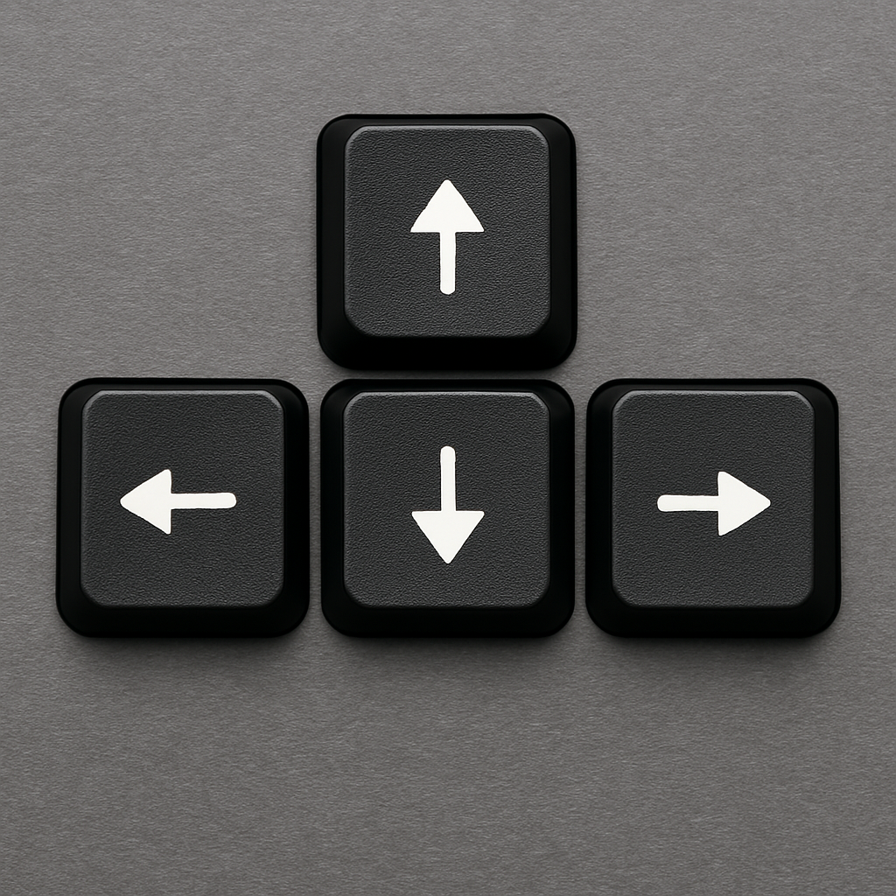

Um jogo de aventura emocionante onde você controla um Yeti que esta tentando chegar em sua casa mas alguns obstaculos estão impedindo, tente chegar em seu iglu ileso.
Nas montanhas geladas do Monte Everest, vive um Yeti, que depois de um longo dia caçando alimentos para sobreviver, quer voltar para o conforto de seu iglu quentinho. Mas a jornada de volta não será tão fácil… os cristais de gelo estão impedindo sua passagem para seu iglu, e como isso já não fosse o bastante, os fantasmas estão à solta e prontos para te pegar. Sobreviva e tente chegar em casa o mais rápido possível!
Use as setas do teclado para pular se mover e desviar dos obstáculos e dos fantasmas, e tente chegar o mais longe possível, mas vá com cuidado os desafios vão aumentando progressivamente.
